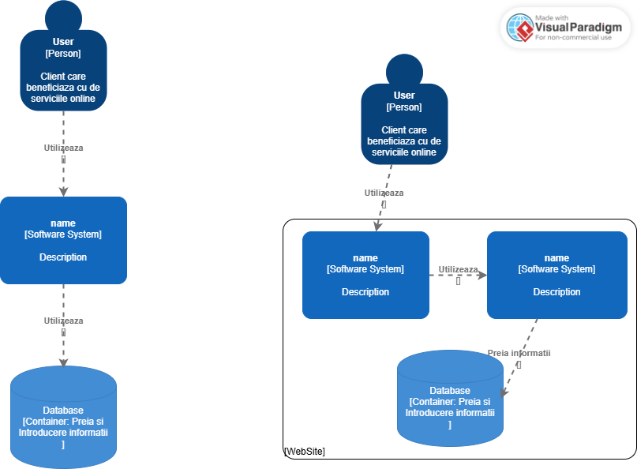
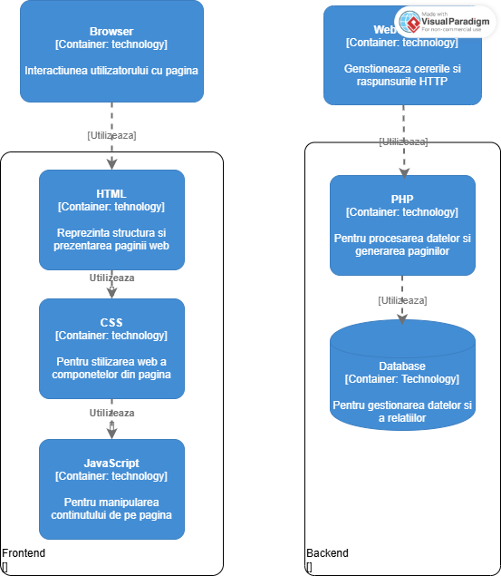
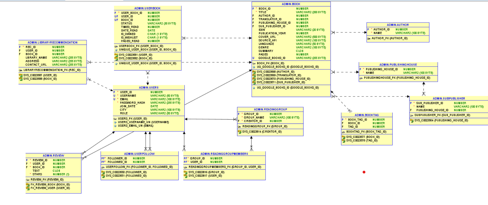

Sistem de Management pentru Colecții de Cărți
Acest document conține documentația proiectului ShelfControl, realizată de:
Acest document a fost redactat luând în considerare prevederile oferite de macheta IEEE System Requirements Specification Template și urmează standardele de documentație tehnică moderne.
Acest document de Specificații pentru Cerințele Software (SRS) pentru aplicația Shelf Control este destinat următoarelor categorii de utilizatori:
Dezvoltatorii implicați în proiectarea, implementarea și mentenanța aplicației Shelf Control vor folosi acest document pentru a înțelege cerințele funcționale și nefuncționale legate de gestionarea colecțiilor de cărți, conturilor de utilizator și integrărilor externe.
Utilizatorii aplicației pot consulta acest document pentru a înțelege funcționalitățile disponibile: organizarea cărților, filtrarea și sortarea acestora, vizualizarea statisticilor de lectură și explorarea opțiunilor de lectură.
Echipa de testare QA se va baza pe acest document pentru a crea și executa teste care să verifice dacă Shelf Control funcționează corect și dacă experiența utilizatorului este fluentă.
Persoanele responsabile cu realizarea ghidurilor de utilizare vor utiliza acest document pentru a redacta materiale clare și relevante despre modul de folosire a Shelf Control.
Shelf Control este o aplicație web modernă care ajută utilizatorii să-și organizeze colecțiile de cărți într-un mod intuitiv și eficient. Aplicația oferă funcționalități complete pentru gestionarea bibliotecilor personale, de la catalogarea cărților până la urmărirea progresului de lectură.
| Componenta | Versiune minimă | Recomandată |
|---|---|---|
| PHP | 7.4 | 8.1+ |
| Oracle Database | 12c | 19c+ |
| Apache/Nginx | 2.4 / 1.18 | 2.4+ / 1.20+ |
| RAM | 2GB | 4GB+ |
| Stocare | 10GB | 50GB+ |
Browsere suportate:
JavaScript: Activat (necesar pentru funcționalități AJAX)
Cookies: Activate (necesare pentru autentificare JWT)
Aplicația Shelf Control utilizează o arhitectură în trei straturi (3-tier) optimizată pentru gestionarea eficientă a colecțiilor de cărți. Arhitectura se bazează pe principiile de separare a responsabilităților și modularitate.
Diagrama C4
 Designul aplicației se bazează pe principiile minimalismului modern, oferind o experiență utilizator curată și intuitivă, potrivită pentru o aplicație dedicată cititoilor pasionați.
Aplicația este optimizată pentru:
| Categorie | Tehnologie | Versiune | Scopul utilizării |
|---|---|---|---|
| Frontend | HTML5 | - | Structura paginilor |
| Frontend | CSS3 | - | Stilizare și layout responsive |
| Frontend | JavaScript | ES6+ | Interactivitate și AJAX |
| Backend | PHP | 8.1 | Logica de business și API |
| Database | Oracle | 19c | Stocarea datelor |
| API | Google Books API | v1 | Căutarea cărților externe |
Baza de date Oracle a fost aleasă pentru performanța superioară în gestionarea relațiilor complexe și pentru suportul avansat al tranzacțiilor ACID.
Diagrama bazei de date
Toate cererile către API necesită un token JWT valid în header:
| Problemă | Cauză posibilă | Soluție |
|---|---|---|
| Token-ul JWT a expirat | Sesiunea a depășit timpul limită | Re-autentificați-vă în aplicație |
| Login eșuat cu credențiale corecte | Probleme de conectivitate cu baza de date | Verificați statusul serverului Oracle |
| Cookie-urile nu se salvează | Setări browser restrictive | Activați cookie-urile pentru domeniu |
| Problemă | Cauză posibilă | Soluție |
|---|---|---|
| Rezultate limitate la căutare | Limită API Google Books | Folosiți termeni mai specifici |
| Căutarea nu returnează rezultate | Cheie API invalidă | Verificați configurația API |
| Încărcare lentă a imaginilor | Conexiune internet lentă | Implementați lazy loading |